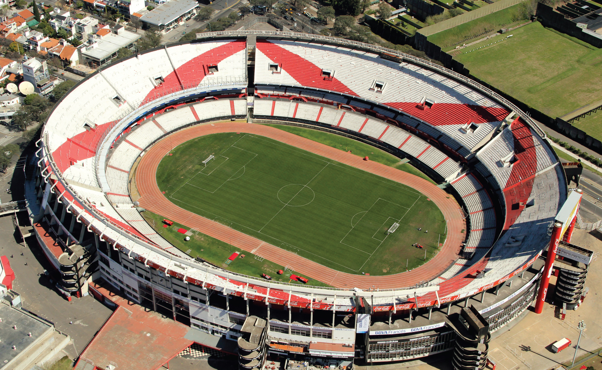
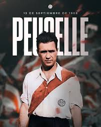
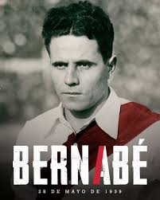

Un poco de su historia

La Historia de River Plate se inicia en 1901. El Club fue fundado el 25 de mayo de 1901, tras la fusión de los clubes Santa Rosa y La Rosales. Además del fútbol en el club se practican otras 65 disciplinas distintas, posee institutos educativos en todos los niveles académicos y fomenta actividades culturales y sociales de diversa índole.
El estadio de River Plate lleva el nombre de el Antonio Vespucio Liberti, popularmente conocido como «El Monumental» . Se encuentra ubicado en la intersección de las avenidas Figueroa Alcorta y Udaondo en la Ciudad Autonoma de Buenos Aires, Argentina. Fue inaugurado el 26 de mayo de 1938 por el presidente de ese entonces, Antonio Vespucio Liberti. Es el estadio dedicado a la práctica futbolística con mayor capacidad de Argentina, y uno de los más grandes de América. Posee una pista de atletismo y un microestadio.
En el ámbito internacional posee 18 títulos oficiales de mayores, 12 de ellos organizados por la Confederación Sudamericana de Fútbol (Conmebol), entre los que se cuentan una Copa Intercontinental, cuatro Copas Libertadores, una Copa Interamericana, una Copa Sudamericana, una Supercopa Sudamericana, tres Recopas Sudamericanas y una Copa Suruga Bank. Los restantes seis títulos consisten en cinco Copas Aldao y una Cup Tie Competition, siendo torneos internacionales organizados en conjunto por la Asociación del Fútbol Argentino y la Asociación Uruguaya de Fútbol en la época previa a la organización de torneos para clubes por parte de la Conmebol. Ocupa el primer puesto en la tabla histórica de la Copa Libertadores de América, habiéndola disputado en 35 oportunidades. Es el club argentino con más participaciones, el quinto en la clasificación general y el cuarto club más laureado.
Uno de sus mayores logros deportivos lo obtuvo el 14 de diciembre de 1986 cuando se consagró campeón de la Copa Intercontinental al derrotar al representante de la Copa de Campeones de Europa: Steaua de Bucarest de Rumania, por 1-0 en el Estadio Nacional de Tokio. Gracias a esa conquista integra el selecto grupo de los únicos 29 clubes en el mundo que han ganado el máximo campeonato de clubes de fútbol a nivel mundial, entre más de 300 000 clubes reconocidos por FIFA.
La IFFHS, en el ranking mundial histórico entre los años 1991 y 2009, lo coloca en la novena posición, lo que lo hace el club con mejor posición en la tabla de todo el continente. Fue designado por la FIFA como el noveno Mejor club del siglo XX luego de los resultados de una encuesta realizada a los lectores de la revista FIFA World Magazine, en diciembre del 2000, ocupando la misma plaza que el AC Milan de Italia y el Flamengo de Brasil, y superando a equipos como el Inter de Italia, Liverpool de Inglaterra o Benfica de Portugal, entre otros, quedando de esta manera como el mejor equipo argentino en este ranking y tercero a nivel continental, atrás del Santos FC de Brasil y Peñarol de Uruguay.Según esta distinción de la FIFA, River Plate es el mejor club argentino del siglo XX, razón por la cual se autoproclama como el «Campeón del Siglo».
Su primera cancha estaba ubicada del lado este de la Dársena Sud del puerto de Buenos Aires. Allí River inició su campaña amateur, luego se mudó a Sarandí -Partido de Avellaneda- durante un breve lapso de tiempo, para regresar al barrio de La Boca nuevamente.
El 7 de mayo logra su primera victoria, imponiéndose a General Belgrano “A” por 4-3 (Tercera División). A pesar de realizar una mala campaña, al año siguiente se inscribe en la Segunda División. El 13 de diciembre de 1908 disputa el ascenso a Primera División, venciendo a Racing Club por 2-1. El partido es impugnado por Racing, debido a que en el segundo gol de River los hinchas ingresaron a la cancha para festejar con los jugadores, debiendo jugarse nuevamente el 27 de diciembre, ganándolo River por 7-0.
Su estreno en primera división fue el 2 de mayo de 1909, goleando de local a Argentino de Quilmes por 7-3; el 12 de septiembre de ese año derrota 1-0 al poderoso Alumni con gol de Hernán Rodríguez. La temporada inicial finalizaría con un honroso segundo puesto, escoltando al multicampeón Alumni Athletic Club y recibiendo el reconocimiento del público por ser el equipo de mayor crecimiento. La gente no se equivocaba y los números no mentían, porque de 40 socios antes del ascenso creció hasta los 1000 en su primera campaña dentro de la máxima categoría y superó los 4000 en 1912. En 1913 de dio el primer enfrentamiento oficial vs Boca Juniors.
En 1914 River Plate obtendría sus primeros títulos en la máxima categoría. Se adjudicó la Copa de Competencia Jockey Club. Ese logro le dio el derecho a disputar la Cup Tie Competition ganando de ese modo su primer título internacional. y en 1921 River consiguió su primera liga en el torneo de Primera División. No sería para nada destacada la actuación de River en los años posteriores, ya que apenas dos subcampeonatos en 1921 y 1922 fueron sus mejores campañas.
En 1923 al no poder renovar el alquiler del predio donde estaba situada su cancha en la Boca, debe buscar una nueva ubicación y construye un nuevo estadio con capacidad para 40.000 personas, en un terreno sobre la avenida Alvear (hoy Libertador) entre Tagle y Austria; contaba con una tribuna oficial y otra popular, ambas de 120 metros de largo. En ese estadio obtendría sus tres primeros campeonatos en la era profesional.
 Con la compra de Carlos Peucelle por 10 mil pesos en 1931, y Bernabé Ferreyra en 1932 por 35 mil pesos, el club revolucionó el mercado de pases de la época, ganándose el apodo de «Millonarios», siendo el único club sudamericano en la historia del fútbol mundial en haber realizado el fichaje más costoso del mundo hasta ese momento.
En 1932 formó un gran equipo, y finalizó el torneo igualando la primera posición junto a Independiente. El partido desempate lo ganó River por 3 a 0, consagrándose campeón de Primera División por primera vez en su historia. En ese año también conquistó la Copa de Competencia, la primera copa nacional que se organizó en el profesionalismo.y en ese año Ferreyra terminó goleador con 43 goles. Con jugadores como José Manuel Moreno, Adolfo Pedernera y Renato Cesarini, y con la adquisición de José María Minella, River logra el primer tricampeonato de su historia. En 1936, se coronó campeón de la Copa de Oro y de la Copa Campeonato, un año después, conquistó el campeonato del año 1937 que volvió al sistema de liga, y River ganó obteniendo 58 puntos en 34 partidos con 106 goles a favor y 43 en contra, siendo su goleador José Manuel Moreno con 37 anotaciones.
Además de conquistar, en el mismo año y en 1937, la Copa Aldao, organizada por la AFA y la AUF, sumando sus primeros dos títulos internacionales oficiales del profesionalismo. En 1937, ganó también la Copa Ibarguren, venciendo a Rosario Central por 5-0. De este modo, el club obtuvo los tres títulos oficiales disputados en la temporada 1937 y se configuró como un equipo copero en los primeros tiempos de la llamada «era rentada».